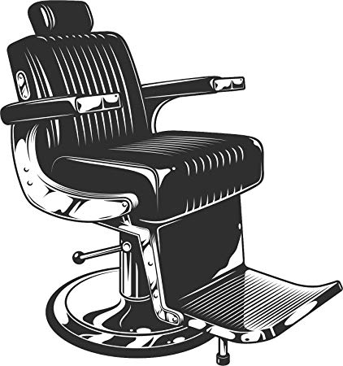
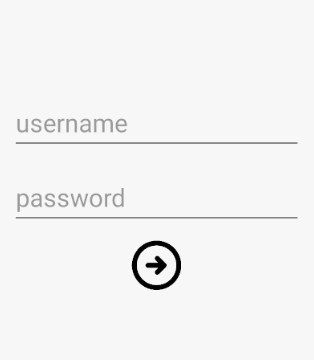
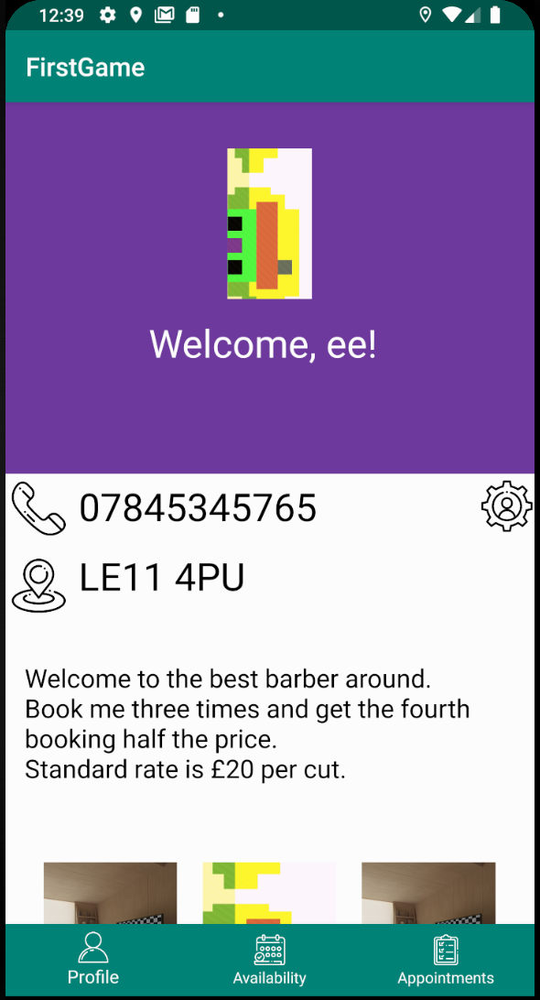
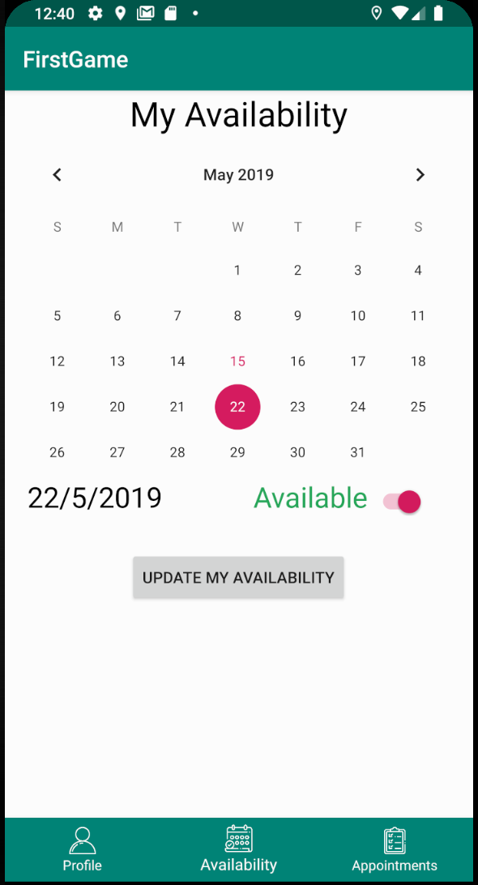
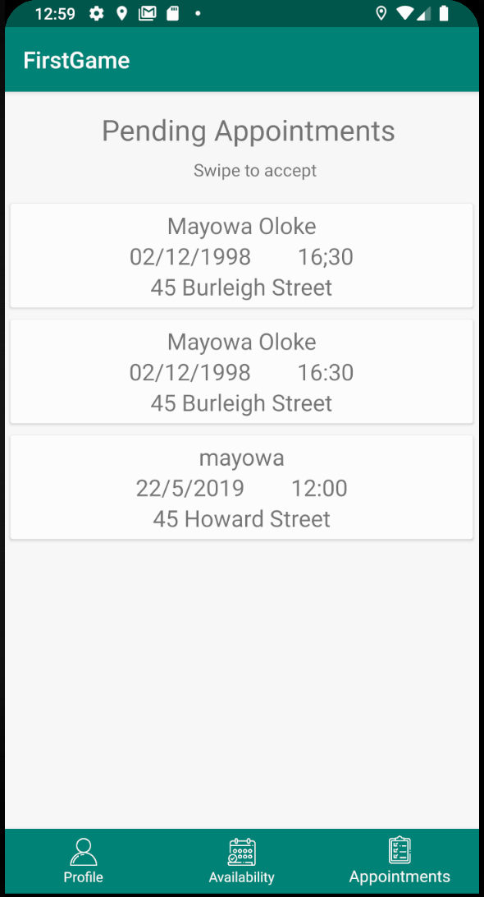
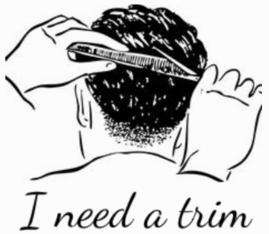
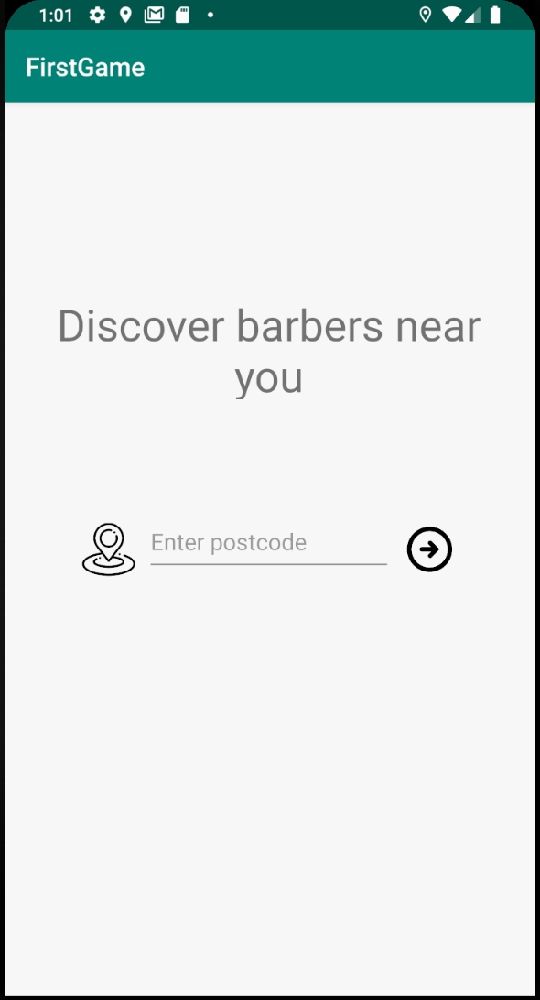
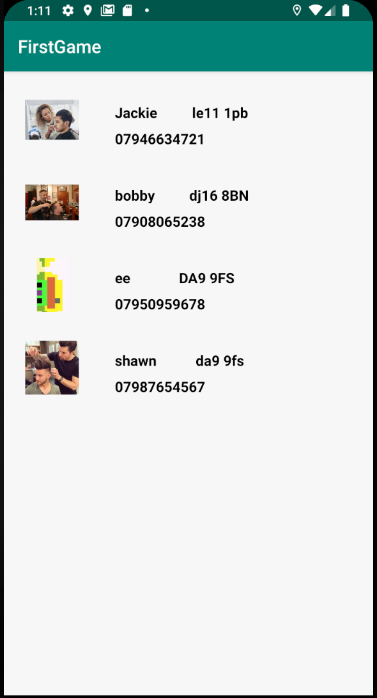
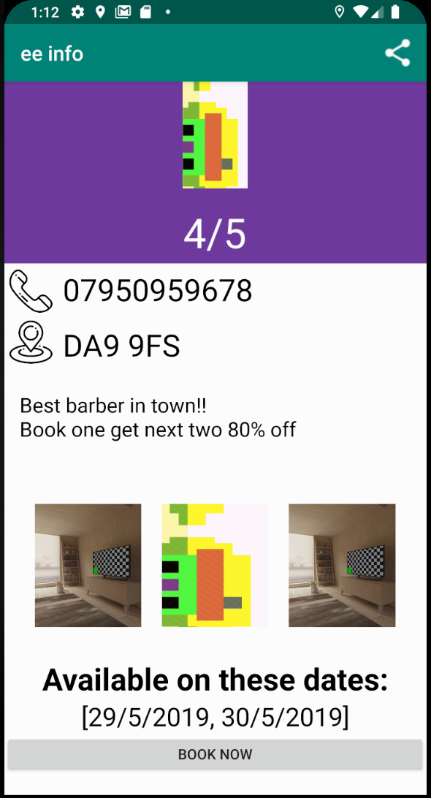

How to use the app for Barbers
How to use the app for Clients
If you are an existing member of the barber community click on the barber button presented on the first page when you first open the app.
If you are yet to join please email us at info@barberapp.cut to get your personal username and password to.
If you have a valid username and password go ahead and login to your dashboard. If you have forgotten your username or password please email us at info@barberapp.cut to get a new login.
Once you login please give the app a few seconds to download your details from local storage and from the database.
Your main profile picture is editable by holding down on the image and uploading from gallery or using the camera to upload. Allow permissions for the app to be able to do this.
The three images at the bottom are for you to showcase your best work. Tap and hold just as above to upload images from gallery or camera.
Tap the settings button to edit your contact number, postcode and portfolio/description. Please make this information is accurate to make the app work smoothly and for clients to contact you and share your work.
Tap on the save button to save this and update your profile. This also save the images you have just uploaded.
Use the navigation button below to navigate between the three pages within the app.
On the availability page, use the calendar view to select dates that you want to alter. Use the switch to set availability on or off.
Don't forget to tap the update button to save your availability. This gives your clients a better chance of booking you on your most convenient days.
On the appointments page you will be presented with pending bookings if you have any. Just swipe to accept, and these clients will be notified.
You also have the option of pasting this into your google calendar app so you don't miss an appointment.

If you are a client looking for barbers, click on the client button on the first screen that is presented on the app.
You now have the option of manually inputting your postcode/location, or getting your current location. To do this just tap the location button and accept any permissions required in order to get your current location.
Please give the app a few seconds to load the barbers database into the application.
Here you will find a range of barbers to choose from, along with their contact details, number, etc.
Tapping on any of these barbers will bring you to their profile page where you can see more information such as terms and conditions, or any qualifying offers they may have.
You can also view their portfolio which shows their best work, additionally their availability is shown so you can book at the most convenient days for you both.
You book them by tapping the button below and entering your details and tapping the book button. Please ensure this information is accurate and in accordance with their availability.
Keep checking back as the best barbers update their availability frequently.
Once your appointment has been accepted, you will receive an in-app notification to let you know. So please check back regularly to know if you have an appointment coming up.
Hopefully this user guide has answered any questions you may have concerning the workings of the application. If not, please do not hesitate to contact us at info@barberapp.cut.
Enjoy!